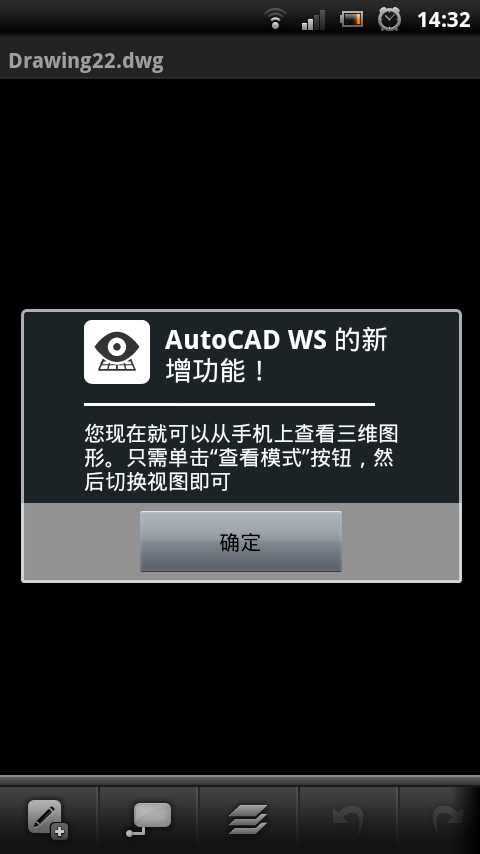
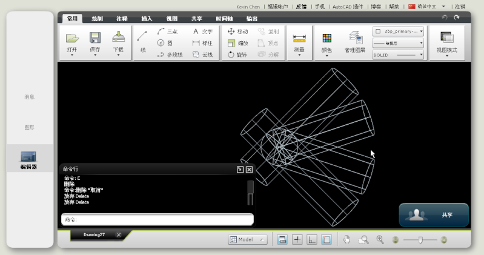

目前剛開始使用一切都覺得很新鮮，一般用戶需註冊帳號即可使用，有點像網路版的AutoCAD(電腦不需安裝AutoCAD主程式)，至於上傳的圖檔是放在原廠的伺服器，但若有保密條約的案子可能就比較不適用。而比較特別的是可以線上即時共享，可以透過即時會議來達到圖檔討論與修改，可以邀請多使用者一起加入，還可控制使用者權限(如修改或下載)!
如果手邊有iPad、iPhone和iPod touch的朋友倒是可以嘗鮮玩看看，但是我這邊沒有所已無法提供使用分享，不過各位可以透過網路來使用，以下提供安裝與使用分享，歡迎一起在加入討論~
整體使用上對於用戶的網路頻寬會有影響，流暢度上還算OK，只不過這算是初步推出的版本，很多地方都需要測試回報並予以修正，對於選取編輯物件也只有支援30個物件，另外只支援2D圖檔(也就是只有XY座標)，作圖方面均須依賴滑鼠，不能使用指令式輸入，這樣對於不習慣使用工具按鈕的用戶有很大的影響。
2012/02/28補充：
AutoCAD WS有陸續更新版，已經可以支持簡體中文版！
剛剛試過手機才可以檢視3D(三維)，但是目前好像太複雜的圖形，程式就會異常終止！


簡單的3D開起來需要一些時間，不過當做效果展示還不錯用喔！

電腦線上版倒是多了一個指令行，可以輸入指令喔～
